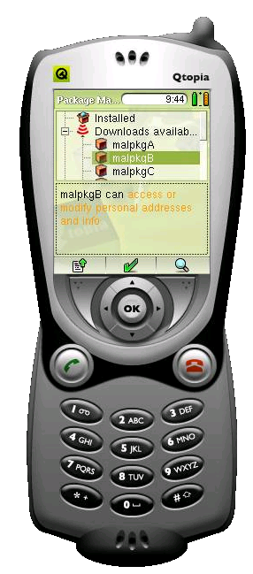

| Home · All Classes · Annotated · Functions |
The following sections describe the methods to formulate policy profiles and domains and provides examples of policy profiles and their effects.
When developing or customizing Qtopia applications, as part of the engineering process, policy profiles and sxe domains must also be formulated.
Tools to assist in developing policy are:
To create your applications policy edit these files:
If you create a new type of Service or QCop message generally it will need to be added to the sxe.profiles file.
Important: after changing policies do the following:
To trouble-shoot SXE problems follow these steps:
The qipkg system is extended to provide additional information to the SXE system using the Domain field. The list below shows each value, its effect on the access granted to the application, and the install information displayed to the user.
Note: do not change the format of this table.
The script scripts/extract_sxe_profiles.pl may be used to create the in code table of user visible policy strings in the package manager.
| SXE Profile name | Access Controls Effect | Information display | Risk level |
|---|---|---|---|
| base | Allow qtopia system level access, not available unless package is signed. Automatically has access as for all the other categories. Intended for use for OTA upgrades (ie equivalent to reflash). | New system for your Qtopia device | High |
| libs | Allow qtopia library load access, not available unless package is signed. Automatically has access for all other categories. Reserved for use for OTA updates (ie equivalent to major patch), and plug-in libraries. | New system items for your Qtopia device | High |
| phonecomm | Allow file level access to /dev for low level phone or device functionality, not available unless package is signed. Automatically has access as for all other categories. Intended for use by OEMs providing new apps or updates. | Use [phone|device] hardware | High |
| docapi | Allow file level access to user Documents, optionally restricted by mime-type | Edit and delete your [mime-type user description, eg MP3, jpeg] files | Medium |
| pim | Allow App level access to modify Personal Information Management records | Edit and delete your PIM data | Medium |
| msg | Allow app level access to SMS and MMS messaging | send text and media messages | Medium |
| net | Allow file and app level access to WAP, GSM, GPRS. | download and talk over your [phone/device]'s internet service | Medium |
| netconfig | Allow the creation, deletion, starting and stopping of network interface configurations | start, stop and configure network interfaces | Medium |
| alarm | Allow the creation and deletion of alarms | create, delete and check status of alarms | Medium |
| beaming | Allow the beaming of files and Vcards over irda (obex) | send and receive files over infrared interfaces | Medium |
| bluetooth | Allow bluetooth connections to other devices and the sending of files and Vcards using bluetooth | connect, pair, send and receive files over bluetooth interfaces | Medium |
| cardreader | Allow access to the cardreader to access sd cards, compact flash etc | read and write data to/from memory cards | Low |
| camera | Allow access to the camera for capturing images | capture images using camera device | Low |
| datetime | Allow setting of the system date, time and timezone | set date, time and timezone | Low |
| drm | Digital Rights Management | download, use and check the rights on DRM enabled files | High |
| handwriting | Allow the use of handwriting as an input method on the device | allow handwriting as an input medthod | Low |
| helix | Allow access to helix for playing sound and video files | play media files using helix | Low |
| language | Allow access to change the system language | change system language | Low |
| lightandpower | Allow changes to power management and lighting settings such as dimming and turning the light off | power management and lighting settings | Low |
| mediarecorder | Allow the recording of sound files | record sound files | Low |
| pictures | Allow access and editing of image files | view and edit image files | Low |
| qdl | Qtopia Document Linking - allows calender, tasks and contacts to link to other documents/objects | link to documents/objects | Low |
| quicklauncher | Allows quicklauncher to morph into other applications | run applications using quicklauncher | High |
| profiles | Allows the changing of all Settings associated with Profiles, Appearance and Light and Power | change Profile, Appearance and Light and Power settings | Medium |
| screensaver | Allows the setting of the screensaver | set screensaver | Low |
| security | Allows changing the phone and sim security settings such as the pin | change phone and sim security settings | Medium |
| sxemonitor | Allows sxemonitor to issue security alerts | issue security alerts using sxemonitor | High |
| words | Allows access to the dictionary for updating words | add words to dictionary | Low |
| window | Allow windowed graphic display | Use your display | Low |
| graphics | Allow full-screen graphic display* | use your whole display eg game, or OpenGL ES accelerated. | Medium |
| theme | Installed Qtopia theme | no actual display to user | Low |
| none | No domains requested | no actual display to user | Low |
The installation mechanism makes it difficult for a package to gain access to perform unexpected behaviors. Because the package must declare the access it requires, it is plain to the user before the package is downloaded or installed. For example a trojan that purported to be a screen-saver but requested web access would have this show up in red "download and talk over your phones internet service", prior to download and install.
In the example below a user is looking for a package to install. This one accesses the users PIM data - if that was not what the user was expecting they will choose another package instead.

| Copyright © 2007 Trolltech | Trademarks | Qtopia 4.2.1 |